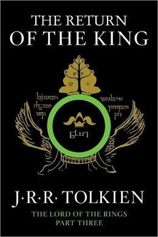

Lord Of The Rings Films
“There is only one Lord of the Ring, only one who can bend it to his will. And he does not share power.” Gandalf, The Fellowship of the Ring
The Fellowship of the Ring

The Lord of the Rings: The Fellowship of the Ring is a 2001 high fantasy film directed by Peter Jackson based on the first volume of J. R. R. Tolkien's The Lord of the Rings (1954–1955). It is the first instalment in The Lord of the Rings film trilogy, and was followed by The Two Towers (2002) and The Return of the King (2003), based on the second and third volumes of The Lord of the Rings. Set in Middle-earth, the story tells of the Dark Lord Sauron , who is seeking the One Ring. The Ring has found its way to the young hobbit Frodo Baggins . The fate of Middle-earth hangs in the balance as Frodo and eight companions who form the Fellowship of the Ring begin their journey to Mount Doom in the land of Mordor, the only place where the Ring can be destroyed. Released on 10 December 2001, the film was highly acclaimed by critics and fans alike who considered it to be a landmark in film-making and an achievement in the fantasy film genre. It has continued to be featured on critic lists of the greatest fantasy films ever made, as of 2015. The film was a massive box office success, earning over $871 million worldwide, and becoming the second highest-grossing film of 2001 in the US and worldwide (behind Harry Potter and the Philosopher's Stone). As of June 2015, it is the 40th highest-grossing film of all time worldwide unadjusted for inflation. It was nominated for thirteen Oscars at the 74th Academy Awards ceremony, winning four for Best Cinematography, Best Makeup, Best Original Score, and Best Visual Effects. It won also four British Academy Film Awards, including Best Film and Best Director BAFTA awards. The Special Extended Edition was released to DVD on 12 November 2002 and to Blu-ray Disc on 28 June 2011. In 2007, The Fellowship of the Ring was voted No. 50 on the American Film Institute's list of 100 greatest American films. The AFI also voted it the second greatest fantasy film of all time during their 10 Top 10 special.
The Two Towers

The Lord of the Rings: The Two Towers is a 2002 high fantasy film directed by Peter Jackson and based on the second volume of J. R. R. Tolkien's novel The Lord of the Rings. It is the second installment in The Lord of the Rings film series, preceded by The Fellowship of the Ring (2001) and concluding with The Return of the King (2003). Continuing the plot of The Fellowship of the Ring, the film intercuts three storylines. Frodo and Sam continue their journey towards Mordor to destroy the One Ring, meeting and joined by Gollum, the ring's former owner. Aragorn, Legolas, and Gimli come to the war-torn nation of Rohan and are reunited with the resurrected Gandalf, before fighting at the Battle of Helm's Deep. Merry and Pippin escape capture, meet Treebeard the Ent, and help to plan an attack on Isengard. Meeting high critical acclaim, the film was an enormous box-office success, earning over $926 million worldwide and is currently the 33rd highest-grossing film of all time (inflation-adjusted, it is the 62nd most successful film in North America). The film won numerous accolades and was nominated for six Academy Awards, winning two.
The Return of the King
The Lord of the Rings: The Return of the King is a 2003 high fantasy film directed by Peter Jackson based on the second and third volumes of J. R. R. Tolkien's The Lord of the Rings. It is the third and final instalment in The Lord of the Rings series, following The Fellowship of the Ring (2001) and The Two Towers (2002). As the Dark Lord Sauron launches the final stages of his conquest of Middle-earth, Gandalf the White and King Théoden of Rohan rally their forces to help defend Gondor's capital Minas Tirith from the looming threat, while Aragorn finally claims the throne of Gondor and, with the aid of Legolas and Gimli, summons the Army of the Dead to help him defeat Sauron. Still, it comes down to the Hobbits Frodo Baggins and Samwise Gamgee , to bear the burden of Sauron's One Ring and deal with the treachery of Gollum. After a long journey, they arrive in the land of Mordor, seeking to destroy the Ring in the place in which Sauron created it, the volcanic fires of Mount Doom. Released on 17 December 2003, The Lord of the Rings: The Return of the King received rave reviews and universal acclaim, and became one of the greatest critical and box-office successes of all time. It was only the second film to gross $1 billion worldwide ($1.12 billion), becoming the highest grossing film released by New Line Cinema, as well as the biggest financial success for Time Warner in general, until Harry Potter and the Deathly Hallows – Part 2 ($1.31 billion) surpassed The Return of the King 's final gross in 2011. The film was the highest-grossing film of 2003 and, by the end of its theatrical run, the second highest-grossing film in history. As of October 2015, it is the twelfth highest-grossing film in history. At the 76th Academy Awards, it won all 11 Academy Awards for which it was nominated, therefore holding the record for highest Oscar sweep. The wins included the awards for Best Picture, the first and only time a fantasy film has done so; it was also the second sequel to win a Best Picture Oscar (following The Godfather Part II) and Best Director. The film jointly holds the record for the largest number of Academy Awards won with Ben-Hur (1959) and Titanic (1997).
Please Click on a video to play the trailers
- The Fellowship Of The Ring
- 2001
- The Two Towers
- 2002
- The Return of the King
- 2003